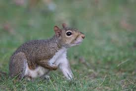

- Giới thiệu: Sóc cây, cũng thường được gọi là sóc là tên gọi chỉ chung cho những loài sóc là thành viên của họ Sóc (Sciuridae) bao gồm hơn một trăm loài chủ yếu là sinh sống ở trên cây, chúng nguồn gốc ở khắp các châu lục, trừ Nam Cực và Úc.
- Khái yếu: Sóc cây không hình thành một phân loại đơn ngành, nhóm duy nhất, nhưng thay vì có liên quan đến các loài động vật khác nhau trong Họ hàng nhà sóc, bao gồm sóc đất, sóc bay, sóc chuột và marmot. Do đó, đặc tính xác định được sử dụng để xác định các loài khác nhau của Sciuridae là sóc cây không phải là quá phụ thuộc vào sinh lý của chúng, nhưng môi trường sống của sóc cây sống chủ yếu giữa các cây, như trái ngược với con sóc khác sống trong hang hốc trong đất hoặc trong hẻm đá.
Hình ảnh minh họa
